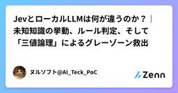

直近1週間の人気フィード
はてなブックマーク数を元に新着優先で並べ替え


Jevにゲームをやらせるな！LLMを蒸留してみよう！ 56
56 Zennの「機械学習」のフィード
Zennの「機械学習」のフィード
はじめにJevのデモとして公式ではDOOMをプレイさせるデモがありました。100ms前後のレイテンシでレスポンスを返せるため、リアルタイム制御に使えるという点が強調されています。https://x.com/CompleteSkeptic/status/2099925687465570372またXをみているとJevにゲームをプレイさせた投稿を多く見かけました。「BERTでよい」論などあると思いますが、特にゲームにおいては入力が自然言語でない以上、簡単に決定木などの古典的な手法で置き換えが可能であり、Jevより性能のよいLLMを蒸留することによって高速、安価、高精度なモデルを簡...
1日前

Google、リアルタイムで表情豊かに話すAIアバター「Gemini 3.8 Live with Live Avatar」提供開始 画像1枚で独自アバターも 32ITmedia AI＋ 最新記事一覧
Googleは、リアルタイム音声対話と動画生成アバターを組み合わせた「Gemini 3.8 Live with Live Avatar」をGemini Enterpriseで提供を開始した。写真1枚から自然に応答するアバターを生成し、多言語や非同期ツール実行に対応。顧客対応や店頭端末などの商用展開を見込む。
2日前

生成AIグラビアをグラビアカメラマンが作るとどうなる？第75回：Qwen-Image 2.1は商用利用に制限あり、Ming ImageはUI/UX特化だがリアル人物OKで自由度高くて期待大（西川和久） 29 テクノエッジ TechnoEdge
テクノエッジ TechnoEdge
9月に登場した生成AI画像系2つ。Qwen-Image 2.1は高性能だが商用利用に制限あり。Ming ImageはUI/UX特化だがリアル人物OK。しかも無検閲なのだ。
2日前

「現代AIの父」シュミットフーバー氏がSakana AIに参画 RSI研究のアドバイザーに 25ITmedia AI＋ 最新記事一覧
Sakana AIが「現代AIの父」と称されるユルゲン・シュミットフーバー氏の参画を発表。ChatGPTの「P」「T」の原型を1991年に発表したと主張する同氏は、再帰的自己改善（RSI）を研究する新設組織のアドバイザーを務める。
2日前

NVIDIA RTX Spark - 最大128GBメモリのWindows AI PCまとめ 9 npaka
npaka
まもなく発売の「NVIDIA RTX Spark」についてまとめました。続きをみる
10時間前

Microsoft、「Copilot」を刷新 「仕事のための新しいOS」とナデラCEO 3ITmedia AI＋ 最新記事一覧
Microsoftは「Microsoft Copilot」アプリの大幅な刷新を発表した。「Home」「Code」「Autopilot」の3タブ構成とし、Officeを直接統合する。自然言語でのアプリ構築や自律的な業務代行エージェントを導入し、日常機能は月額課金、高度なエージェントや最新モデルは従量課金に移行する。
16時間前

Meta「たまごっち」風AIデバイス「Muse Charm」発表。12月出荷予定、詳細は後日発表 3 テクノエッジ TechnoEdge
MetaはAIアシスタント「Muse」を搭載した小型ハンドヘルドデバイス「Muse Charm」を発表しました。マーク・ザッカーバーグCEO自らが壇上でデモを披露し、スマートグラスを装着しない人がMuseと会話するための手段になるとしています。
2日前

ゼロから声を作れる音声生成モデル「Gemini 3.8 Flash TTS」公開 「Gemini Notebook」でも利用可能に 5ITmedia AI＋ 最新記事一覧
Googleは、テキストから音声を生成する「Gemini 3.8 Flash TTS」とその軽量版を公開した。従来の選択式から進化し、自然言語による声のゼロからの生成や演技・感情の細かな制御に対応する。日本語を含む多言語をサポートし、透かし技術「SynthID」も埋め込む。開発者向けAPIや各種サービスで順次提供する。
2日前

JevとローカルLLMは何が違うのか？｜未知知識の挙動、ルール判定、そして「三値論理」によるグレーゾーン救出 5 Zennの「機械学習」のフィード
!先に結論を言います: 推論精度や機能はローカルで完全に代替できるため「インフラ要件（GPUの有無・機密性）」で使い分けるのが正しく、どちらを使う場合も Yes/No を捨てて「三値論理（保留）」で設計するのが鉄則です。 1. はじめに：確率較正の先にある「実務での適用境界」前回の検証記事『Jevはサイコロを振らないがローカルLLMは振れるのか？｜「較正された確率」の検証と命題設計のブレークスルー』では、林寛太氏のnoteに端を発するサイコロ問題を追試しました。素朴な Yes/No では確率が 50:50 や過信に縮退するものの、「命題の補集合を明示する（出目1 vs 出目2...
2日前

Jev, Gemini, DistilBERT, LightGBMの分類性能を比較してみた 31 Zennの「ディープラーニング」のフィード
なぜ比較しようと思ったか？Jevについて、定性的な"評判"では掴めないような地に足の着いた定量的な"評価"を知りたかったからです。もちろん、定性的な情報自体は、定量化やもっと言えば言語化すらできない肌感を伝えられるという側面において、価値がある情報だとは思いますが、JevをはじめとしたAI関連の情報は比率として定性的な情報が多すぎる傾向があるため、相対的に定量化された情報が有益となると思っています。そこで今回は、Jev vs. Gemini, DistilBERT, LightGBM の「分類性能」という完全にオリジナルの評価実験を手元で行いましたので、その結果から言えるJevの定...
6日前

最高水準の動画生成AI「MiniMax H3」高速化を40日で極めた。本命「H3 Max」のウェイト公開はもう不要なのか？（CloseBox） 4 テクノエッジ TechnoEdge
現時点で最高水準と言われ、商用サービスSeedance 2.5に匹敵するとも言われている動画生成AI「MiniMax H3」。その高速化への道のりを記事にしました。
2日前

生成AIグラビアをグラビアカメラマンが作るとどうなる？第74回：MiniMax H3高速化、15枚参照ほか多彩なテクニックを紹介（西川和久） 24 テクノエッジ TechnoEdge
MiniMax H3高速化の基本4つを紹介しよう。
6日前

NECが「AI自律型組織」を新設 「従業員はいらなくなる？」の問いに、CAXOはどう答えたか 3ITmedia AI＋ 最新記事一覧
NECが「AIネイティブカンパニー」を目指して「AI自律型組織」を新設した。AIを「企業OS」として組織に組み込むというのは、果たして、どのような取り組みなのか。AIが自律的に進化する組織に変わる中で、従業員はどうなるのか。企業のAXについて考察する。
3日前

Sunoに匹敵する音楽生成AI「YuE2」、膨大な論文から“まだ誰も知らない科学的関係”を予測するソニー製AI「Hakken」など生成AI技術5つを解説（生成AIウィークリー） 20 テクノエッジ TechnoEdge
「生成AIウィークリー」（第160回）は、Suno v5／v6に匹敵する音楽生成AI「YuE2」や、過去の論文から未来の発見を予測するAI「Hakken」を取り上げます。
7日前

Claude Opus 5.5発表、Astra超え・Fable 5.1級で半額以下。口調も結論から分かりやすく改善、無料リセット配布 3 テクノエッジ TechnoEdge
Anthropicは米国時間9月22日、AIモデル「Claude Opus 5.5」の提供を開始しました。新たな「Claude 5.5」ファミリーの最初のモデルで、同社の各サービスとAPIのほか、Amazon Web Services、Google Cloud、Microsoft Azureでも利用できます。
3日前


ひょっとしてローカル最速？ 「詳細記述スパース」でMiniMax H3前人未到の3ステップ超えできちゃったかも（CloseBox） 3 テクノエッジ TechnoEdge
AI動画がさらに最大で1.5倍速くなりました。MiniMax H3の現在最速である3ステップの上に「スパースアテンション」を重ねることで。
5日前